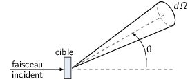
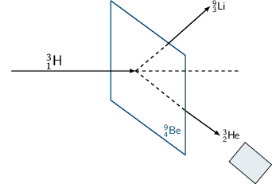

TD2 : Accélérateurs & section efficace
1 Accélérateurs
1.1 Introduction
- cyclotron
- Le cyclotron est un type d’accélérateur de particules circulaire inventé par Ernest Orlando Lawrence et Milton S. Livingston de l'université de Californie à Berkeley au début des années 1930. Dans un cyclotron, les particules placées dans un champ magnétique suivent une trajectoire en forme de spirale et sont accélérées par un champ électrique alternatif à des énergies de quelques MeV à une trentaine de MeV.
- synchrocyclotron
- Le cyclotron perd de son efficacité quand on cherche à accélérer des protons au-delà de 10 à 20 MeV, en raison de la variation relativiste de la masse qui perturbe le fonctionnement quand elle atteint une grandeur de 1 ou 2 %. Un synchrocyclotron est un cyclotron dont la fréquence du champ électrique est changée (progressivement diminuée) pour compenser le gain de masse des particules accélérées pendant que leur vitesse commence à approcher la vitesse de la lumière. Le synchrocyclotron permet d'atteindre des énergies de l'ordre de centaines de MeV. Le premier synchrocyclotron a été construit à l’Université de Californie (Berkeley) en 1946.
- synchrotron
- La caractéristique du synchrotron est que l'intensité du champ magnétique de l'anneau est adaptée de façon synchrone à l'énergie du faisceau de particules, afin de les maintenir sur une trajectoire fixe. Il peut en outre y avoir un second anneau, avec des particules tournant en sens inverse, afin de réaliser des collisions entre particules avec une énergie utilisable très élevée. Ce sont des collisionneurs.
1.2 Exercice
Un proton de masse au repos \(m\), de vitesse \(\vv{v}\), se déplaçant dans un champ d'induction \(\vv{B}\) normal à \(\vv{v}\), parcourt une trajectoire circulaire de rayon \(R\) dans un cyclotron.
- Établir la relation liant \(R\) à \(m, q, v\) et \(B\) dans le cas relativiste.
Proton de masse \(m = \unit[938.27]{MeV/c}^{2}\) se déplaçant à la vitesse \(\vv{v}\) dans un champ d'induction \(\vv{B}\) normal à \(\vv{v}\).

PFD: \(\Upsigma\vv{F} = m\vv{a} = \frac{d\vv{p}}{dt}\)
Régime relativiste \(\vv{p} = \gamma{}m\vv{v}\) et donc \(\text{d}\vv{p}/\text{d}t = \gamma{}m\text{d}\vv{v}/\text{d}t\). Or \(\vv{v}=R\dot\theta\vv{u}_\theta\) (\(\dot\theta < 0\)) soit \(\text{d}\vv{v}/\text{d}t = -R(\text{d}\theta/\text{d}t)^{2}\vv{u}_{r} = -v^{2}/R\vv{u}_{r}\).
\begin{align*} \Upsigma\vv{F} &= q\vv{v}\times\vv{B} = -qvB\vv{u}_r\\ qvB &= \frac{\gamma{}mv^{2}}{R}\\ R &= \frac{\gamma{}mv}{qB} = \frac{p}{qB}\\ \end{align*}À chaque tour, \(v\nearrow\) avec \(\vv{B}=\text{constante}\) donc \(R\nearrow\)
- Montrer que le temps \(t_0\) mis par le proton pour parcourir une trajectoire circulaire dans le cyclotron est indépendant de \(v\) pour de petites valeurs de \(v\) (cas non relativiste).
Calcul de \(t_{0}\)
\begin{align*} t &= \frac{2\pi R}{v} = \frac{2\pi}{qB}\cdot\gamma{}m \end{align*}Pour \(v\ll c\), \(\gamma\sim 1\) et donc
\begin{align*} t_{0} = \frac{2\pi m}{qB} \end{align*}
- Calculer dans ce cas l'impulsion et l'énergie cinétique (en MeV), ainsi que le temps de parcours \(t_0\) d'une trajectoire circulaire pour \(B\) = 1.5 Tesla et \(R\) = 0.5 m.
\(B = 1.5\) T et \(R = 0.5\) m.
\begin{align*} p &= qBR\\ \left.pc\right|_\text{Joules} &= qBRc\\ \left.pc\right|_\text{eV} &= BRc = 0.5\cdot1.5\cdot3\,10^{8} = \unit[225]{MeV} \end{align*} \begin{align*} T = \frac{1}{2}mv^2 = \frac{p^{2}}{2m} = \frac{p^{2}c^{2}}{2mc^{2}} = \frac{225^{2}}{2\cdot938.3} = \unit[27]{MeV} \end{align*} \begin{align*} t_{0} = \frac{2\pi\,m}{qB} = \frac{2\pi\,mc^{2}}{qBc^{2}} = \unit[44]{ns} \end{align*}
- À partir de quelle valeur de l'énergie cinétique du proton (que l'on suppose de nouveau relativiste), le temps \(t\) mis par celui-ci pour parcourir une trajectoire circulaire dans le champ d'induction \(B\) diffère-t-il de plus de 5% du temps \(t_0\) calculé précédemment ? En déduire les limites d'un cyclotron.
- \(t_{0} = \frac{2\pi\,m}{qB}\) et \(t = \gamma\frac{2\pi\,m}{qB}=\gamma t_0\)
Dans un cyclotron, dès lors que l'énergie par nucléon devient supérieure à ~50 MeV, des problèmes relativistes apparaissent i.e. la particule n'est plus accélérée en phase avec le champ électrique accélérateur → synchrocyclotron ou synchrotron
- synchrocyclotron
- on fait varier la fréquence \(f= \frac{v}{2\pi R}\) d'accélération pour compenser la variation de \(v\)
- synchrotron
- on fait varier le champ magnétique \(B\) pour maintenir la particule sur la même trajectoire i.e. le même rayon \(R\)
- Dans un synchrotron, le rayon de courbure de la trajectoire des protons est maintenu constant au cours de l'accélération, tandis que l'induction \(\vv{B}\), toujours normale à la direction de la vitesse, a alors une valeur variable. Sachant qu'en fin d'accélération, les protons ont une énergie cinétique \(T\) = 7 TeV pour \(B\) = 5.4 Tesla, calculer le rayon de courbure de la trajectoire.
\(T\) = 7 TeV et \(B\) = 5.4 T avec \(R = \frac{\gamma mv}{qB} = \frac{pc}{qBc}\). Or
\begin{align*} (pc)^{2} &= E^{2} - m^{2}c^{4}\\ &= T^{2} + m^{2}c^{4} + 2Tmc^{2} - m^{2}c^{4}\\ &= T\cdot(T + 2mc^{2}) \sim T^{2} \end{align*}d'où
\begin{align*} R = \frac{T}{qBc} = \frac{7\,10^{12}\cdot1.6\,10^{19}}{1.6\,10^{19}\cdot5.4\cdot3\,10^{8}} = \unit[4.3]{km} \end{align*}soit une circonférence de 26 km.
On considère la collision de 2 protons d'énergie cinétique 7 TeV dans des anneaux.
\begin{align*} p + p \rightarrow p + p + N^+ + N^- \end{align*}où \(N^+\) et \(N^-\) sont des antiparticules (même masse mais charges électriques opposées). Quelle est la masse maximale des particules \(N\) qui pourraient être ainsi créées dans la collision ?
\(T_{S} = |Q|/2\) avec \(Q = \Upsigma\,m_\text{initiale}c^{2} - \Upsigma\,m_\text{finale}c^{2}\) et
\begin{align*} \Upsigma\,m_\text{initiale}c^{2} &= 2\,m_{p}c^{2}\\ \Upsigma\,m_\text{finale}c^{2} &= 2\,m_{p}c^{2} + 2\,m_{N}c^{2} \end{align*} \begin{align*} T_{S} = \frac{2m_{N}c^{2}}{2} = m_{N}c^{2} = \unit[7]{TeV} \end{align*}
On veut étudier la même réaction
\begin{align*} p + p \rightarrow p + p + N^+ + N^- \end{align*}en bombardant une cible d'hydrogène au repos par un faisceau de protons. Déterminer l'énergie seuil \(T_S\) pour que la réaction ait lieu, en supposant que les particules \(N\) ont la masse déterminée à la question précédente.
Réaction sur cible fixe
\begin{align*} T_{S} &= \frac{|Q|}{2}\cdot\frac{\Upsigma\,m_{if}c^{2}}{m_{p}c^{2}}\\ &= \frac{2m_{N}c^{2}}{2}\cdot\frac{4m_{p}c^{2}+2m_{N}c^{2}}{m_{p}c^{2}}\\ &\simeq\frac{2\,(m_{N}c^{2})^{2}}{m_{p}c^{2}}\\ &\simeq\unit[100\,10^{15}]{eV} = \unit[100]{PeV} \end{align*}
- Quel serait alors, dans un champ magnétique \(B\) = 5.4 Tesla, le rayon de courbure de la trajectoire d'un proton qui aurait l'énergie cinétique \(T_S\) ?
Rayon de courbure
\begin{align*} R = \frac{pc}{qBc} \simeq \frac{\left.T_{S}\right|_\text{eV}}{Bc} = \frac{100\,\text{PeV}}{5.4\cdot3\,10^{8}} = \unit[60\, 000]{km} \end{align*}
2 Accélérateur, section efficace et luminosité
2.1 Introduction
 Les mesures de section efficace sont des mesures typiques de physique des particules. Elles traduisent la probabilité de passage d'un état initial de la matière \(\psi_i\) à un état final \(\psi_f\).
Un détecteur couvrant un angle solide \(\d\Omega\) et situé à un angle \(\theta\) par rapport à l'axe du faisceau détectera ainsi \(\d n\) particules par unité de temps
\begin{align*} \d n=\underbrace{\text{flux incident}}_{\substack{\text{nbr. particules incidentes}\\\text{/unité de temps}}}\times\underbrace{\text{ nbr. de noyaux cible}}_{\substack{\text{nbr. centre diffuseurs}\\\text{/unité de volume}}}\times\text{ épaisseur cible}\times\frac{\d\sigma}{\d\Omega}\d\Omega_\text{détection} \end{align*}où \(\d\Omega_\text{détection}\) = surface de détection/(distance cible-détecteur)2 = \(\sin\theta \d\theta\d\phi\) avec \(\theta\in[0,\pi]\) et \(\phi\in[0,2\pi]\). Le terme \(\left.\frac{\d\sigma}{\d\Omega}\right|_\theta\) est la section efficace différentielle à l'angle \(\theta\) et s'exprime en barn par stéradian où 1 barn1 = 10-24 cm2 = 10-28 m2=100 fm2. De la section efficace différentielle, on déduit la section efficace totale \(\sigma\) en intégrant sur l'angle solide total \(\d\Omega\) : \(\sigma=\int\frac{\d\sigma}{\d\Omega}\d\Omega\) et correspond à la probabilité qu'une particule incidente ait intéragi avec les particules constitutives de la cible.
l'étymologie du mot barn est un peu loufoque : les physiciens américains l'ont adopté lors des recherches sur la bombe atomique pendant la Seconde Guerre mondiale. Le nom de cette nouvelle unité serait issu d'une blague "as big as a barn" (aussi grande qu'une grange) car les sections efficaces de l'uranium 238 étaient très importantes dans le domaine épithermique (forêt de résonance) comparées aux sections efficaces typiques des réactions nucléaires. Initialement les physiciens américains utilisaient ce terme argot de barns dans le but de masquer le sujet de leurs recherches. Cependant après la Seconde Guerre mondiale, le barn est devenu une unité standard de la physique des particules.
Remarques :
- l'épaisseur de la cible est souvent donnée en terme de densité surfacique exprimée en g/cm2 et correspond donc au produit de la densité volumique par l'épaisseur physique de la cible.
le flux \(\phi\) incident est parfois donné en terme d'intensité du faisceau (exprimé en Ampères). Le nombre de particules incidentes par unité de temps devient
\begin{align*} \phi=\frac{I}{Ze}\text{ où $e$ correspond à la charge élémentaire} \end{align*}
On veut étudier la diffusion élastique des deutons 21H, d'énergie incidente 30 MeV, sur une cible de 6329Cu.
Le faisceau de deutons, de section droite circulaire de 2 cm de diamètre, contient 6 1010 particules s-1 cm-2, et est mesuré dans une cage de Faraday. La cible de 63Cu a une épaisseur de 2 mg/cm2. Un détecteur rectangulaire (4 cm × 2 cm) est situé à 1 m de la cible à l'angle θ = 30°.
Calculer le nombre de deutons détectés par seconde par ce détecteur rectangulaire, sachant qu'à l'angle de diffusion θ = 30° et à 30 MeV, la section efficace différentielle est de 0.1 barn/stéradian.
21H+ 6329Cu→ 21H+ 6329Cu
\begin{align*} dn=\phi Ne\frac{\d\sigma}{\d\Omega}d\Omega=\phi\frac{\mathcal{N}\rho_e}{A_\text{cible}}\frac{\d\sigma}{\d\Omega}\d\Omega \end{align*}où \(\phi=\phi'\pi R^2\) et \(\phi'=6\,10^{10}\,\text{s}^{-1}\text{.cm}^{-2}\). Le nombre de deutons détectés est
\begin{align*} \left.dn\right|_{30^\circ}&=\phi\frac{\mathcal{N}\rho_e}{A_\text{cible}}\left.\frac{\d\sigma}{\d\Omega}\right|_{\theta=30^\circ}\frac{S_\text{détecteur}}{d^2_\text{cible-détecteur}}\\ &=6\,10^{10}\times\pi\times1^2\times\frac{6.02\,10^{23}\times2\,10^{-3}}{63}\times0.1\,10^{-24}\times\frac{4\times2}{100^2}\\ &=\unit[287]{deutons/s} \end{align*}
On veut étudier la réaction
\begin{align*} ^9_4\text{Be} + ^3_1\text{H} \rightarrow ^3_2\text{He} + ^9_3\text{Li} \end{align*}Pour cela, on bombarde une cible de 9Be de 100 μg/cm2 avec un faisceau de tritium (31H) de 25 MeV.
- Quelle est la section efficace totale de la réaction, sachant que l'intensité du faisceau incident est \(I\) = 500 nA et que le nombre de noyaux détectés par seconde est \(n\) = 2000 ?
- On détecte dans cette réaction les particules d'32He. Donner le schéma de principe d'une telle expérience. Quelle est l'allure du spectre en énergie des noyaux d'32He détectés ?
- 31H+ 94Be→ 32He+ 93Li
Le flux incident \(\phi\) s'exprime en fonction de l'intensité \(I\) du faisceau
\begin{align*} \phi=\frac{I}{Ze} \end{align*}Par ailleurs, le nombre de noyaux détectés \(n=\unit[2000]{/s}\) soit
\begin{align*} n&=\phi\times N\times e\times\sigma=2000\\ &=\frac{I}{Ze}\times\frac{\mathcal{N}\rho_e}{A_\text{cible}}\times\sigma\\ \sigma&=\frac{n\times A_\text{cible}\times Ze}{I\times\mathcal{N}\times\rho_e}\\ \sigma&=\unit[9.6\,10^{-29}]{cm}^2=\unit[9.6\,10^{-5}]{barn}=\unit[96]{microbarn} \end{align*}Principe expérimental

L'énergie totale est fixé par l'énergie cinétique du faisceau incident (+ les énergies de masse de la cible et du faisceau) : la distribution en énergie des noyaux de 32He présente des raies correspondant aux niveaux en énergie de 32He (ou 93Li) → énergies quantifiées
- Dans les faisceaux d'un anneau de collisions \(e^+e^-\), les électrons (positrons) sont
regroupés en paquets qui se croisent à chaque tour. Le collisionneur LEP-I auquel on s'intéresse
ici était un synchrotron de circonférence 27 km, dont le rayon de courbure valait \(R\) ~ 4.5 km et
dans lequel circulaient, en sens inverses, 4 paquets de \(N_1\) positrons et 4 paquets de \(N_2\)
électrons.
On caractérise une région d'intersection des faisceaux par sa luminosité \(\mathcal{L}\), telle que le nombre d'interactions par unité de temps soit égal au produit \(\mathcal{L}\sigma\) de la luminosité par la section efficace.
En déduire la dimension et l'unité de \(\mathcal{L}\).
On peut montrer que la luminosité s'exprime en fonction des intensités \(I_1\) et \(I_2\) des courants électriques des faisceaux, du rayon \(R\) de l'anneau et de la surface \(S\) de recouvrement des paquets par la relation :
\begin{align*} \mathcal{L} = \frac{2\pi R}{c} \frac{I_1 I_2}{e^2 S} \end{align*}où \(e\) est la charge électrique élémentaire.
Calculer la luminosité \(\mathcal{L}\), en cm-2.s-1, pour \(I_1\) = \(I_2\) = 3 mA et \(S\) = 0.5 mm2.
Pour déterminer la luminosité effectivement obtenue auprès du collisionneur, on observe en général une réaction de référence dont la section efficace est bien connue. Il s'agit ici de la diffusion dite "Bhabha" \(e^+ e^- \rightarrow e^+ e^-\) dont la section efficace différentielle, à l'approximation des petits angles que l'on utilisera pour le calcul, est :
\begin{align*} \frac{\d\sigma}{\d\Omega} = \frac{16 \alpha^2(\hbar c)^2}{E^2 \theta^4} \end{align*}où α est la constante de structure fine, \(E\) l'énergie totale et θ l'angle de diffusion.
Le détecteur qui compte les électrons diffusés a la forme d'une couronne, centrée sur l'axe du faisceau. Il couvre tous les angles azimutaux φ et les angles polaires θ compris entre 3 et 8 degrés.
- Déterminer la section efficace de diffusion, à l'énergie \(E\) = 90 GeV.
- Si on observe 950 interactions dans ce détecteur en une heure de prise de données, que vaut la luminosité associée ?
La luminosité \(\mathcal{L}\) s'exprime comme le rapport du nombre de particules détectés par unité de temps sur la section efficace
\begin{align*} \mathcal{L}=\frac{n}{\sigma} \end{align*}Ainsi, une réaction/interaction de section efficace \(\sigma\) sera d'autant "mieux" observée que la luminosité sera grande et donc que le nombre de particules résultantes de cette réaction/interaction sera conséquente. L'unité de luminosité est donc
\begin{align*} \left[\mathcal{L}\right]=\frac{\left[n\right]}{\left[\sigma\right]}=T^{-1}.L^{-2} \end{align*}La luminosité dépend de l'intensité de chacun des faisceau entrant en collision
\begin{align*} \mathcal{L}&=\frac{2\pi R}{c}\times\frac{I_1\,I_2}{e^2S}\\ &=\frac{2\pi\times4.5\,10^3}{3\,10^8}\times\frac{9\,10^{-6}}{(1.6\,10^{-19})^2\times0.5\,10^{-6}}\\ &=6.63\,10^{34}\,\text{m}^{-2}\text{.s}^{-1}=6.63\,10^{30}\,\text{cm}^{-2}\text{.s}^{-1} \end{align*}Diffusion Bhabha \(e^+e^-\to e^+e^-\)
\begin{align*} \frac{d\sigma}{d\Omega}=\frac{16\alpha^2(\hbar c)^2}{E^2\theta^4} \end{align*}
avec \(E=\unit[90]{GeV}\) et \(\alpha=\frac{e^2}{4\pi\epsilon_0\hbar c}\) où \(\hbar c=\unit[197.3]{MeV.fm}\)
La section efficace \(\sigma\) est égale à
\begin{align*} \sigma&=\int\frac{\d\sigma}{\d\Omega}\d\Omega\\ &=\int_0^{2\pi}\int_{\theta_1}^{\theta_2}\sin\theta \d\theta \d\phi\frac{\d\sigma}{\d\Omega}\\ &=2\pi\frac{16\,\alpha^2(\hbar c)^2}{E^2}\int_{\theta_1}^{\theta_2}\frac{\sin\theta}{\theta^4}\d\theta \end{align*}Dans la mesure où \(\theta\ll1\), \(\sin\theta\sim\theta\) soit
\begin{align*} \sigma=2\pi\frac{16\,\alpha^2(\hbar c)^2}{E^2}\int_{\theta_1}^{\theta_2}\frac{\d\theta}{\theta^3} \end{align*}avec \(\theta_1=3^\circ=\unit[0.0524]{rad}\) et \(\theta_2=8^\circ=\unit[0.1396]{rad}\).
\begin{align*} \sigma&=\frac{32\pi\,\alpha^2(\hbar c)^2}{2E^2}\times\underbrace{\left[\frac{1}{\theta_1^2}-\frac{1}{\theta_2^2}\right]}_{=312.9}\\ &=\frac{32\pi\times e^4\times\cancel{(\hbar c)^2}}{2\times(4\pi\epsilon_0\cancel{\hbar c})^2\times E^2}\times312.9\\ &=\frac{e^2}{\pi\epsilon_0^2\left.E\right|_\text{eV}^2}\times312.9=\unit[4\,10^{-36}]{m}^2=\unit[4\,10^{-8}]{barn}=\unit[40]{nanobarn} \end{align*}Le nombre d'interaction par seconde est \(n=\frac{950}{3600}=\unit[0.2639]{s}^{-1}\). La luminosité est égale à
\begin{align*} \mathcal{L}=\frac{n}{\sigma}=\frac{0.2639}{4\,10^{-36}}=6.553\,10^{34}\,\text{m}^{-2}\text{.s}^{-1} \end{align*}La luminosité instantanée du LHC est voisine de 1034 cm-2.s-1 soit 10-2 pb-1.s-1. À titre de comparaison, le collisionneur \(p\bar{p}\) du Tevratron avait une luminosité de 3.2 1032 cm-2.s-1 ce qui intégré sur son temps d'acquisition de 2001 à 2008 a fourni une luminosité intégrée de 5000 pb-1. En un peu moins d'une semaine de prise de données, le LHC a atteint la même luminosité intégrée que le Tevatron.
3 Section efficace et neutrons thermiques
On appelle neutrons thermiques des neutrons lents en équilibre thermodynamique avec le milieu dans lequel ils se trouvent.
On irradie une cible de 105B avec un faisceau de neutrons thermiques d'énergie cinétique \(T\) = 2.5 10-2 eV, produits par un réacteur, afin de créer des noyaux de 7Li par la réaction :
\begin{align} n_\text{th} + ^{10}_{5}\text{B} \rightarrow \alpha + ^7_3\text{Li} \end{align}On détecte les particules α émises au cours de cette réaction. Quelle est leur énergie cinétique \(T_{\alpha}\) ? On donne les masses nucléaires suivantes, en MeV :
\(m_{\alpha}c^2\) = 3727.398, \(m_{^7\text{Li}}c^2\) = 6533.877, \(m_{^8\text{Li}}c^2\) = 7471.417, \(m_{^{10}\text{B}}c^2\) = 9324.495, \(m_{^{11}\text{B}}c^2\) = 10252.615
\(n_\text{th.}+^{10}_{5}\text{B}\rightarrow\alpha+^{7}_{3}\text{Li}\)
Calcul de la chaleur de réaction \(Q\)
\begin{align*} Q&=m_nc^2+m_{^{10}_{5}\text{B}}c^2-m_\alpha c^2-m_{^{7}_{3}\text{Li}}c^2\\ &=939.6 + 9324.495 - 3727.398 - 6533.877=\unit[2.82]{MeV}>0 \end{align*}La réaction est donc exoénergétique ou spontanée et ne requiert pas nécessairement d'énergie cinétique pour les neutrons \(T_{n_\text{th.}}\ll1\sim0\). On considèrera la réaction se faisant au repos \(T_{n_\text{th.}}=T_{^{10}_{5}\text{B}}\sim0\). La conservation de l'impulsion implique donc que \(\vv{p}_\alpha=-\vv{p}_{^{7}_{3}\text{Li}}\) soit
\begin{align*} p_\alpha^2 c^2&=p_{^{7}_{3}\text{Li}}^2c^2\\ T_\alpha^2+2T_\alpha\,m_\alpha c^2&=T_{^{7}_{3}\text{Li}}^2+2T_{^{7}_{3}\text{Li}}\,m_{^{7}_{3}\text{Li}}c^2 \end{align*}La conservation de l'énergie implique quant à elle
\begin{align*} E_n+E_{^{10}_{5}\text{B}}&=E_\alpha+E_{^{7}_{3}\text{Li}}\\ m_nc^2+m_{^{10}_{5}\text{B}}c^2&=m_\alpha c^2+m_{^{7}_{3}\text{Li}}c^2+T_\alpha+T_{^{7}_{3}\text{Li}}\\ Q&=T_\alpha+T_{^{7}_{3}\text{Li}} \end{align*}soit
\begin{align*} T_\alpha^2+2T_\alpha\,m_\alpha c^2&=\left(Q-T_\alpha\right)^2+2\left(Q-T_\alpha\right)\,m_{^{7}_{3}\text{Li}}c^2\\ T_\alpha\times\left(2m_\alpha c^2+2m_{^{7}_{3}\text{Li}}+2Q\right)&=Q^2+2Qm_{^{7}_{3}\text{Li}}c^2\\ T_\alpha&=\frac{Q^2+2Qm_{^{7}_{3}\text{Li}}c^2}{2\left(m_n c^2+m_{^{10}_{5}\text{B}}c^2\right)}\\ &=\unit[1.8]{MeV} \end{align*}
On veut maintenant étudier la réaction :
\begin{align} n + ^{11}_{5}\text{B} \rightarrow \alpha + ^8_{3}\text{Li} \end{align}Dire, en justifiant votre réponse, si cette réaction est possible avec des neutrons thermiques. Donner alors ses conditions d'étude.
\(n+^{11}_{5}\text{B}\rightarrow\alpha+^{8}_{3}\text{Li}\)
Calcul de la chaleur de réaction \(Q\)
\begin{align*} Q&=m_nc^2+m_{^{11}_{5}\text{B}}c^2-m_\alpha c^2-m_{^{8}_{3}\text{Li}}c^2\\ &=939.6 + 10252.615 - 3727.398 - 7471.417=\unit[-6.6]{MeV}<0 \end{align*}i.e. une réaction endoénergétique qui, pour se réaliser, implique que les neutrons aient une énergie cinétique minimale \(T_S\) de
\begin{align*} T_S&=\frac{|Q|\times\Sigma m_{if}c^2}{2m_{^{11}_{5}\text{B}}c^2}\\ &=\unit[7.21]{MeV}\gg\unit[2.5\,10^{-2}]{eV} \end{align*}
- On envoie le faisceau de neutrons thermiques sur une cible de Bore naturel de surface 10 cm2, d'épaisseur 1 μm, de densité ρ = 2.34 g/cm3 et de composition isotopique 19.8% de 10B et 80.2% de 11B. La section efficace totale de la réaction (1) vaut σ = 3840 b. On sait de plus que la section efficace différentielle est isotrope dans le système du centre de masse pour des neutrons lents. Le détecteur de particules α, de surface utile 5 cm2 et situé à 1 m de la cible, enregistre 473 particules α à la minute. Quel est le flux de neutrons thermiques, en cm-2s-1 ?
Le nombre de particules α détectées se déduit de l'expression suivante
\begin{align*} dn_\alpha=\phi_{n_\text{th.}}\times\frac{\mathcal{N}\times\rho_e}{A_\text{cible}}\times\frac{\d\sigma}{\d\Omega}\d\Omega \end{align*}Le flux incident de neutrons thermiques est donc
\begin{align*} \phi_{n_\text{th.}}=\frac{\d n_\alpha\,A_\text{cible}}{\mathcal{N}\times\rho_e\times\frac{\d\sigma}{\d\Omega}\d\Omega} \end{align*}Bore naturel → 19.8% 10B+80.2% 11B. Le nombre de nucléons moyen de la cible est donc
\begin{align*} A_\text{cible}=0.198\times10+0.802\times11=10.802 \end{align*}Par ailleurs, l'épaisseur de cible \(\rho_e=\unit[2.34\,10^{-4}]{g/cm}^2\) est seulement constituée de 19.8% de 10B nécessaire à la réaction. On introduit donc une épaisseur "effective" de 10B correspondant à 19.8%\(\cdot\rho_e\). Finalement la section efficace différentielle \(\frac{\d\sigma}{\d\Omega}\) est isotrope soit \(\frac{\d\sigma}{\d\Omega}=\frac{\sigma}{4\pi}\). On déduit ainsi le flux par seconde \(\phi_{n_\text{th.}}\)
\begin{align*} \phi_{n_\text{th.}}&=\frac{\frac{473}{60}\times10.802}{6.02\,10^{23}\times0.198\times2.34\,10^{-4}\times\frac{3840\,10^{-24}}{4\pi}\times\frac{5}{100^2}}\\ &=\unit[2\,10^7]{s}^{-1} \end{align*}La surface de la cible étant de 10 cm2, le flux par seconde et par unité de surface est donc \(F=\frac{\phi}{S_\text{cible}}=2\,10^6\,\text{cm}^{-2}\text{.s}^{-1}\).
- On irradie maintenant une cible isotopiquement séparée de 11B avec des neutrons de 13
MeV, pour lesquels la section efficace différentielle de la réaction (2) est
\(\frac{\d\sigma}{\d\Omega}\) = 3.8 mb/sr à 20°. On détecte les particules α avec le même
détecteur que précédemment, placé à 20°.
- Quelles mesures supplémentaires faut-il faire afin de déterminer la section efficace totale de la réaction ?
- En supposant que ces mesures montrent une dépendance angulaire de la forme \(\d\sigma/\d\Omega = K/\sin\theta\), calculer la section efficace totale.
- \(T_n=\unit[13]{MeV}>T_S=\unit[7.21]{MeV}\) et
\(\left.\frac{\d\sigma}{\d\Omega}\right|_{20^\circ}=\unit[3.8]{mb/sr}\)
- Pour calculer la section efficace totale \(\sigma\), il s'agit d'intégrer la section efficace différentielle sur 4π stéradian : il faut donc connaitre la dépendance angulaire \((\theta,\phi)\) de \(\frac{\d\sigma}{\d\Omega}\).
\(\frac{\d\sigma}{\d\Omega}=\frac{K}{\sin\theta}\) avec \(K=\left.\frac{\d\sigma}{\d\Omega}\right|_{20^\circ}\sin\,20^\circ=\unit[1.3]{mb/sr}\). La section efficace totale devient
\begin{align*} \sigma&=\int\frac{\d\sigma}{\d\Omega}\d\Omega=\int_0^{2\pi}\d\phi\int_0^\pi\frac{K}{\sin\theta}\sin\theta \d\theta\\ &=2\pi^2\,K=\unit[25.65]{mb} \end{align*}